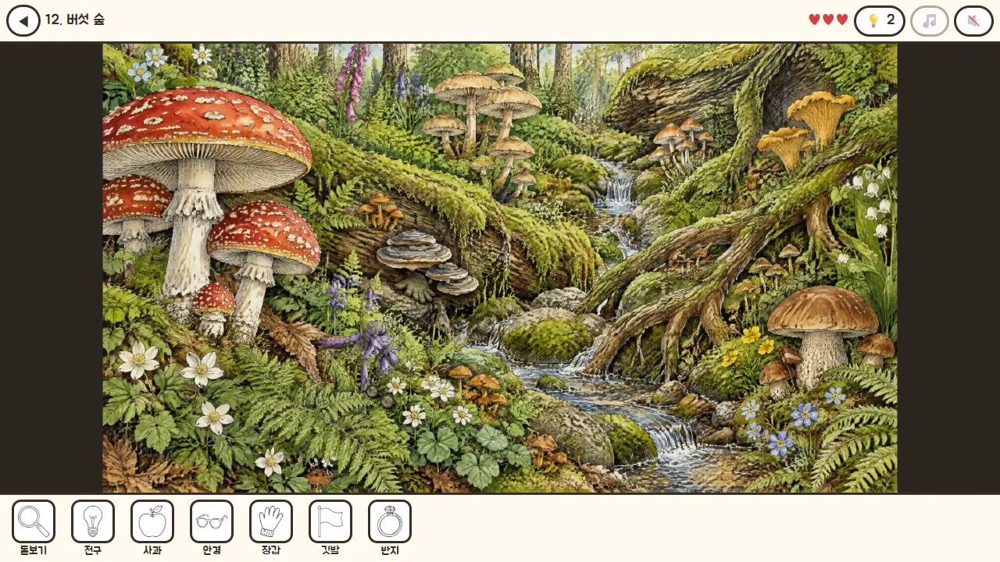
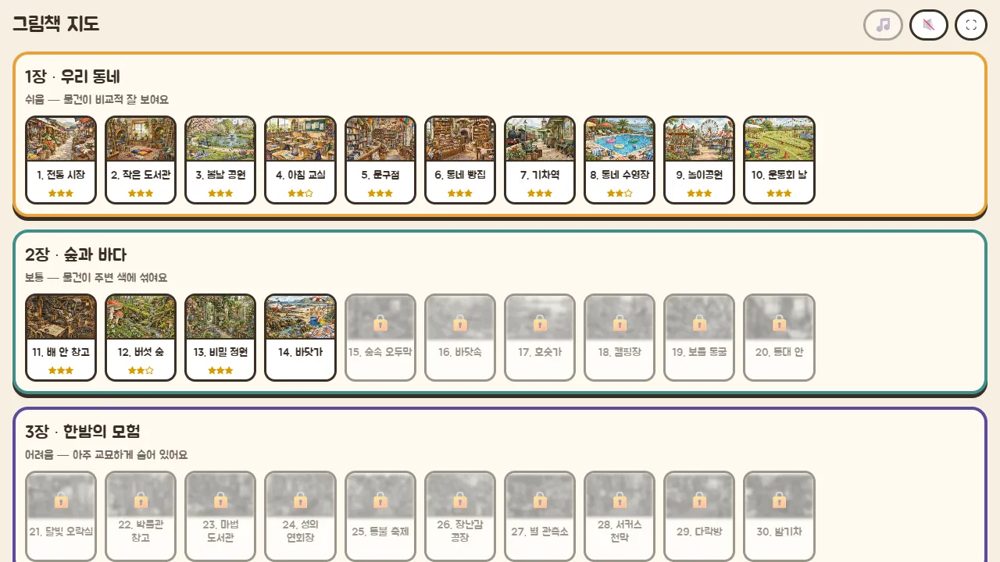
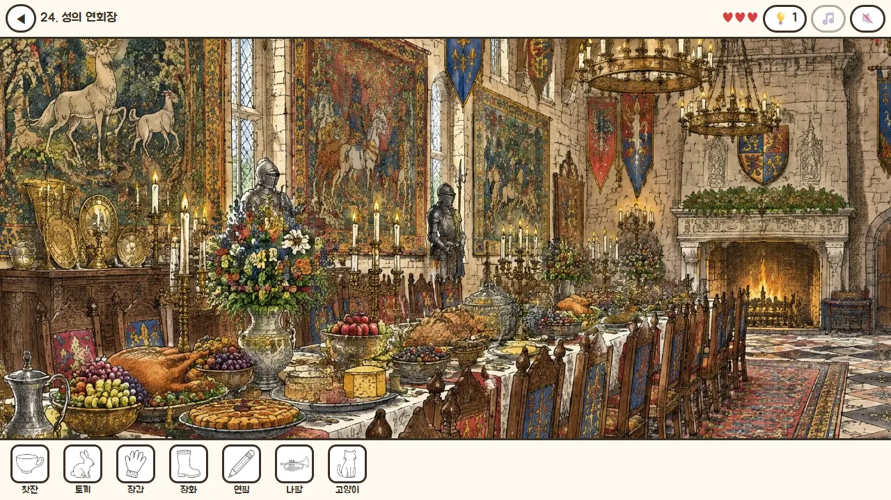

🧩 퍼즐 게임 · 무료 · 설치 없음
숨바꼭질 그림책
“그림책 속에 꼭꼭 숨은 물건, 찾았다!”
- 그림책 30권 · 3장
- 판마다 하트 3개
- 장마다 다른 오르골 음악
- 깬 판과 별 자동 저장
회원가입 없이 누르면 바로 시작돼요
어떤 게임인가요?
아침 교실, 북적이는 전통 시장, 동네 빵집과 문구점. 펜 선과 수채 물감으로 꼼꼼하게 그린 그림책 장면 속 어딘가에 열쇠, 깃털, 찻잔 같은 물건들이 꼭꼭 숨어 있어요.
아래 목록에 찾을 물건이 그림으로 나와요. 그림을 크게 키우고 이리저리 옮겨 가며 찾다가, 발견하면 톡 누르세요. 목록의 물건을 모두 찾으면 그 그림책을 덮고 다음 권이 열려요.
1장 「우리 동네」에서는 물건이 비교적 잘 보이지만, 2장 「숲과 바다」에서는 주변 색에 섞이고, 3장 「한밤의 모험」에서는 무늬 속에 아주 교묘하게 숨어 있어요. 서른 권을 모두 덮으면 기다리던 이야기가 펼쳐져요.
이렇게 해요
- STEP 1
크게 키워 살펴봐요
두 손가락으로 벌리거나 마우스 휠을 굴려 그림을 키우고, 끌어서 옮겨요. 작은 물건은 크게 키워야 보여요.
- STEP 2
찾으면 눌러요
목록에 있는 물건을 찾아 누르면 동그라미가 그려지고 목록에 체크가 돼요. 물건이 아닌 곳을 누르면 하트가 하나 줄어요.
- STEP 3
다 찾으면 다음 그림책
하트 세 개를 다 쓰면 그 판을 다시 해요. 다 찾으면 남은 하트만큼 별을 받고 다음 그림책이 열려요.



📚 서른 권의 그림책
- 1장 우리 동네: 전통 시장 · 작은 도서관 · 봄날 공원 · 아침 교실 · 동네 빵집 · 기차역 · 놀이공원 …
- 2장 숲과 바다: 배 안 창고 · 버섯 숲 · 비밀 정원 · 바닷가 · 바닷속 · 보물 동굴 · 캠핑장 …
- 3장 한밤의 모험: 달빛 오락실 · 박물관 창고 · 마법 도서관 · 성의 연회장 · 별 관측소 · 밤기차 …
- 막히면 💡 힌트가 물건이 있는 근처를 크게 짚어 줘요 (1장 3번, 2장 2번, 3장 1번)
장이 넘어갈수록 찾을 물건이 많아지고, 더 작고, 더 교묘하게 숨어요.
이런 분께 추천해요
- 그림을 꼼꼼히 들여다보는 걸 좋아하는 분
- 가족이나 친구와 화면 하나를 같이 보며 찾고 싶은 분
- 잔잔한 음악과 함께 천천히 쉬어 가고 싶은 분
한 곳만 보지 말고 그림을 구역으로 나눠 차례로 훑어보세요. 물건은 그림 곳곳에 고르게 흩어져 있어요. 아무 데나 누르면 하트가 줄어드니, 확실할 때 누르세요.
📱 어떤 기기에서 하면 좋을까요?
- 가장 좋아요태블릿 가로·세로 모두
그림이 크게 보이고 손가락으로 키우기 좋아 가장 편해요.
- 가장 좋아요컴퓨터·노트북 마우스
마우스 휠로 키우고 끌어서 옮겨요. 큰 화면에서 그림이 가장 시원하게 보여요.
- 좋아요휴대폰 세로·가로 모두
그림이 화면을 꽉 채우고 밀어서 봐요. 작은 물건은 두 손가락으로 크게 키워서 찾아요.
오른쪽 위 메뉴(⋮ 또는 ···)에서 「다른 브라우저로 열기」를 눌러 크롬이나 사파리로 열어 주세요. 앱 안에서는 전체 화면이 안 되고 저장이 풀릴 수 있어요.
🍎 아이폰·아이패드에서는
- ① 사파리로 열기
카카오톡이나 네이버 앱 안에서는 화면이 좁아요. 「다른 브라우저로 열기」나 사파리로 열어 주세요.
- ② 홈 화면에 추가하기
아이폰은 전체 화면이 되지 않아요. 공유 버튼(□↑) → 「홈 화면에 추가」로 열면 주소창 없이 꽉 찬 화면이 돼요.
- ③ 소리
무음 스위치가 켜져 있으면 음악이 나지 않아요. 위쪽 🎵(음악)와 🔊(효과음) 단추로 따로 켜고 끌 수 있어요.
🤖 갤럭시 등 안드로이드에서는
크롬이나 삼성 인터넷으로 열고 「시작하기」를 누르면 전체 화면이 돼요. 그림책 한 권마다 그림을 새로 불러오니 와이파이에서 하면 더 빨라요.
▶ 바로 해 보기
설치도, 회원가입도 필요 없어요.
숨바꼭질 그림책 시작하기game.edoori.co.kr/hidebook/